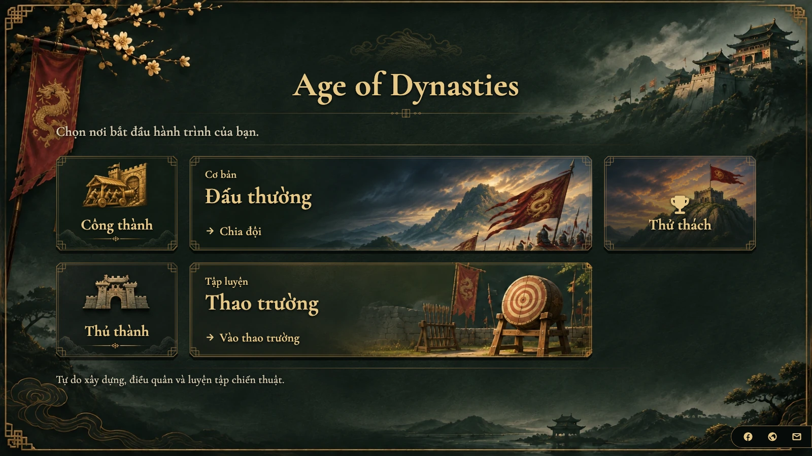
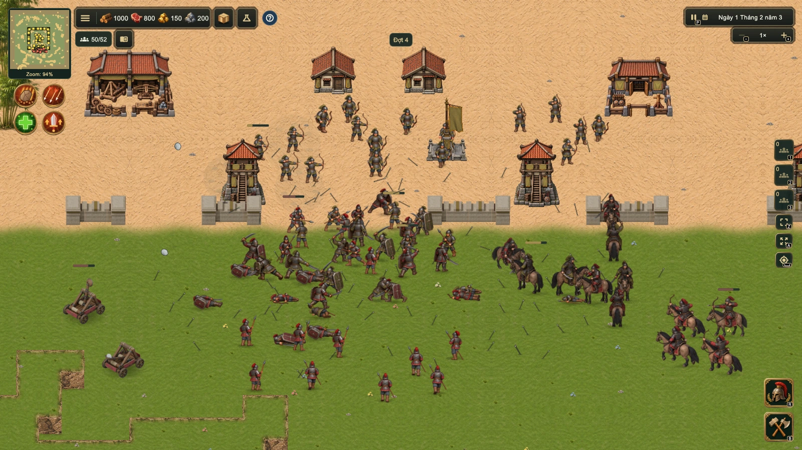
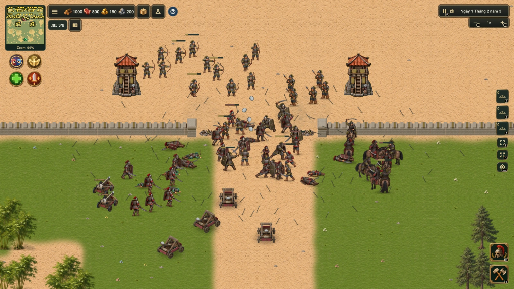
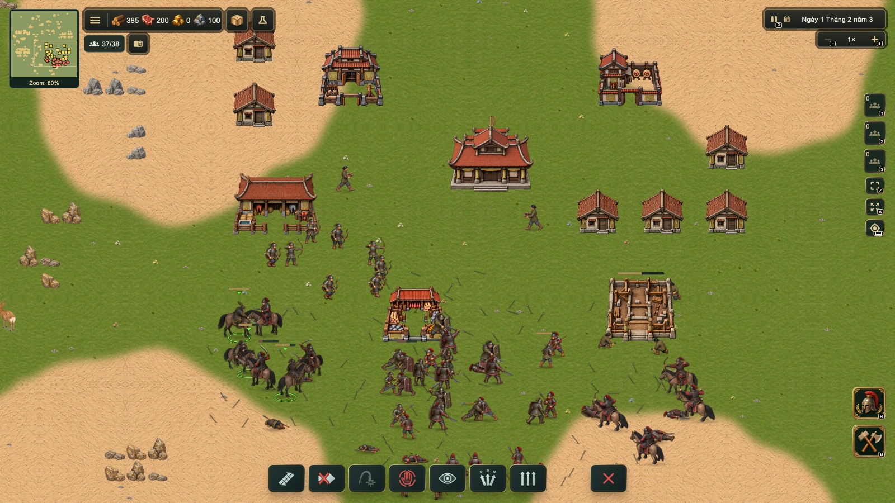
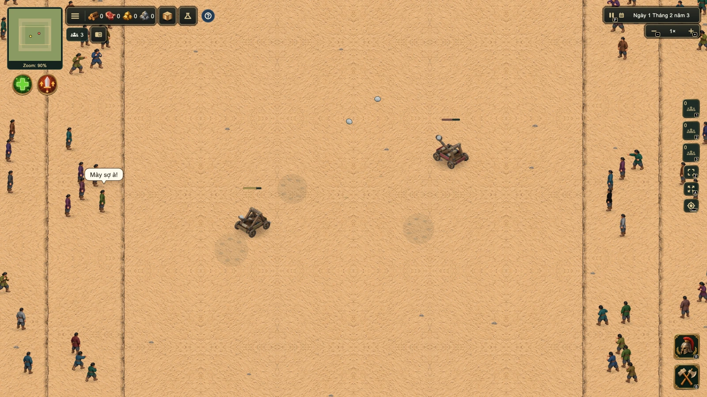

Chọn chiến trường của bạn
Giữ thành trước các đợt tiến công, dẫn quân công phá phòng tuyến, xây dựng đế chế trong Đấu thường hoặc vượt qua từng màn Thử thách. Thao trường luôn sẵn sàng để bạn luyện điều binh và thử đội hình mới.

Chiến thuật thời gian thực
Xây dựng căn cứ, phối hợp bộ binh, cung thủ, kỵ binh và khí giới công thành. Giữ vững phòng tuyến, dẫn quân chinh phục thành trì hoặc vượt qua những thử thách riêng biệt — mỗi chiến trường đòi hỏi một cách cầm quân.
Lối chơi
Chọn ảnh để xem kích thước lớn. Các cảnh trong game được dàn dựng để giới thiệu lối chơi.
Giữ thành trước các đợt tiến công, dẫn quân công phá phòng tuyến, xây dựng đế chế trong Đấu thường hoặc vượt qua từng màn Thử thách. Thao trường luôn sẵn sàng để bạn luyện điều binh và thử đội hình mới.

Bố trí cung thủ sau chiến tuyến, đưa bộ binh giữ cổng và xây thêm công trình hỗ trợ. Phối hợp quân đội, tháp canh và kỹ năng để bảo vệ căn cứ trước những đợt tiến công ngày càng mạnh.

Dẫn quân áp sát thành trì, dùng cẩu đá và xe nỏ yểm trợ lực lượng xung kích. Phối hợp các mũi tiến công, phá phòng tuyến và tiến sâu vào căn cứ đối phương.

Chọn từ hai đến bốn nền văn minh, chia đội và đối đầu với bot ở ba mức khó. Thu gom tài nguyên, xây dựng căn cứ, tuyển quân và nâng cấp để tạo lợi thế trước khi đưa quân quyết chiến.

Mỗi màn đặt ra một nhiệm vụ và tình thế riêng, buộc bạn tận dụng lực lượng đang có. Từ né đòn, vượt trận địa đến tìm đường về căn cứ, hãy tính thời điểm di chuyển và hoàn thành từng mục tiêu để mở màn tiếp theo.
